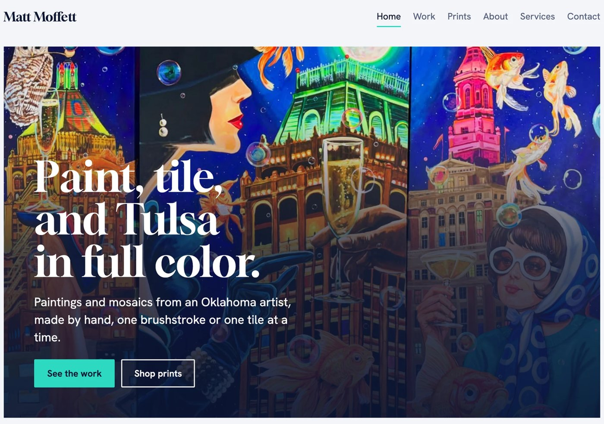

Studio 51 is an all-in-one studio by Sophie Berry, based in Tulsa, Oklahoma and available worldwide.
My background is in international business, management information systems and Chinese, and from there I found my way to media. I’ve run creator and brand accounts, produced podcasts, clipped live sport, managed projects end to end and built websites, working in places like New York, Rotterdam, Genoa and Tulsa.
51Sbsb is antimony, element 51, and my initials.
it was ground into kohl, the first eyeliner:
one of the first things made to be looked at.
a coffee table book for tulsa collectors
I produced and edited a coffee table book for Tulsa art collectors Jack and Jan Alexander, documenting their personal collection of more than 2,000 works of art.
The book is both an archive and a love letter to a lifetime of collecting, capturing the depth behind one of Tulsa’s most remarkable private collections.

creative strategy & live social for the women's track meet
At ATHLOS NYC 2024, I led creative strategy and content development across social, managed the content calendar, built relationships with athletes and partners, and coordinated pre- and post-production for content shoots.
Partnerships I managed included Toyota, Spectrum, WYN Beauty and Megan Thee Stallion.
ATHLOS NYC 2024 was a Shorty Awards finalist in the Real-Time Response and Event & Experiential categories.
At ATHLOS NYC 2025 and ATHLOS London 2026, I was the on-site media manager. From the broadcast truck, I directed live EVS clipping, calling key moments as they happened so the social team could edit while the meet was still running. I also co-managed live posting to amplify athlete moments and fan engagement in real time.


where healthcare meets wall street
End-to-end production for a video podcast on health tech and investing, presented by Silicon Valley Bank and hosted by Christina Farr and Stephanie Davis. I prepped guests and talking points, built each run-of-show, ran studio days in New York, and turned every episode into clips and social posts.
Guests included leaders from Midi Health, Rock Health Advisory, Aidoc, Oxeon, Grow Therapy and Talkspace.
portfolio site for a tulsa painter
A home for Matt's paintings, mosaics and prints. Every piece shows full size, with what's available listed first and sold work kept on view.
Prints sell through Shopify, and a simple dashboard lets Matt add new work himself.



social, content & video for a masala dabba brand
I run social for Spice Wheel, a masala dabba brand, and produce its content and video end to end, from scripting through filming, editing and posting.
social content & influencers
I created a summer social content bundle for Desi Wok to grow awareness and sales through the season.
Alongside organic social, I managed influencer content that put Desi Wok in front of thousands of new customers.
tell me what you're working on and when you need it